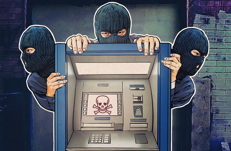

⠀
Estos son los crimenes mas conocidos:⠀
Sabotaje informático: Este delito consiste en que el "delincuente" recupere o busque destruir el centro de cómputos en sí (las máquinas) o los programas o informaciones almacenados en los ordenadores. Se presenta como uno de los comportamientos más frecuentes y de mayor gravedad en el ámbito político.⠀
⠀
Piratería informática: La piratería informática consiste en la violación ilegal del derecho de autor. La piratería es una de las modalidades de reproducción técnica (la otra es la reproducción burda del original cuya apariencia dista mucho de la auténtica), implica la elaboración de una copia semejante al original , con la intención de hacerla pasar por tal.⠀
⠀
Robo de Cajeros automáticos y tarjetas de crédito: Delito mediante mediante el cual se logra retirar dinero del cajero automático, utilizando una tarjeta magnética robada, o los números de la clave para el acceso a la cuenta con fondos.⠀
⠀
Phreaking: Es el ciberdelito mas antiguio conocido, consiste en ingresar en las redes de telecomunicaciones para realizar llamadas telefónicas a larga distancia utilizando la cuenta ajena.⠀
⠀
Robo de identidad: Despues de obtener los datos personales de alguna persona, se procede a realizar todo tipo de operaciones para provecho del victimario, fingiendo ser la persona a la que se extrajo su información sensible. Encuadra como delito de estafa. Si el actuar del sujeto activo comporta dar a conocer datos personales ajenos contenidos en base de datos a las que por su empleo tiene acceso, entonces por expreso mandato legal la figura aplicable es la de revelación de secreto profesional.⠀
⠀